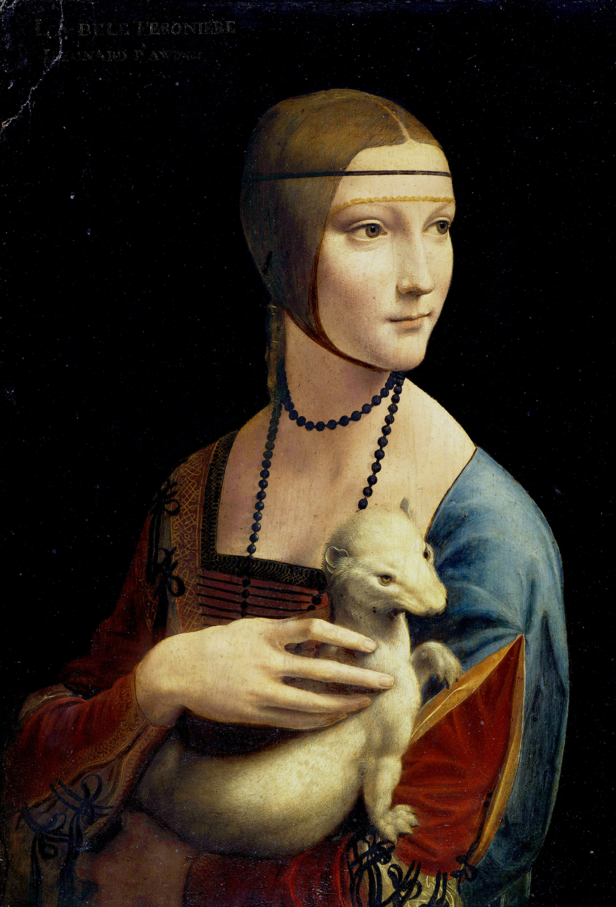
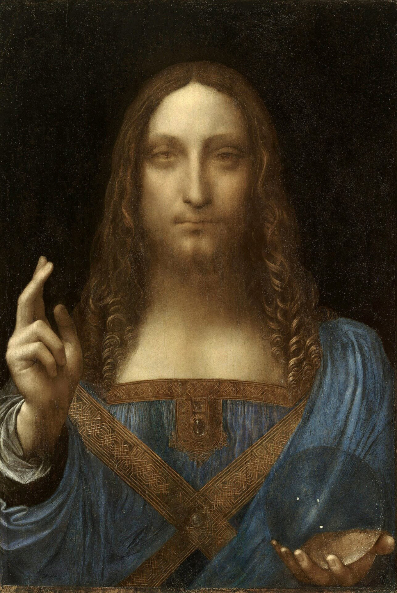

Galeria



Biografia
Leonardo da Vinci, urodzony 15 kwietnia 1452 roku we wsi Vinci w
Republice Florenckiej (obecnie Włochy), był wszechstronnym geniuszem
epoki renesansu. Jego wyjątkowe talenty obejmowały malarstwo, rzeźbę,
inżynierię, matematykę, anatomię i wiele innych dziedzin.
Wczesne lata życia spędził w pracowni Andrea del Verrocchio, gdzie
rozwijał swoje umiejętności artystyczne. Jego pierwsze prace, takie
jak "Sakrament Ołtarza" czy "Annuncjacja", szybko zdobyły uznanie.
Mona Lisa i Ostatnia Wieczerza to jedne z najbardziej ikonicznych
obrazów stworzonych przez da Vinci, zyskujące światową sławę.
Jednak zainteresowania Leonarda nie ograniczały się tylko do
malarstwa. Był również genialnym wynalazcą, projektując maszyny
latające, mosty, a nawet pierwsze szkice helikoptera. Jego notatki
zawierają analizy anatomiczne i projekty innowacyjnych wynalazków, co
świadczy o jego niezwykłym umyśle.
Leonardo da Vinci był także uczonym, badacze przyrody i pasjonatem
anatomii. Jego rysunki anatomiczne są uznawane za jedne z najbardziej
precyzyjnych i zaawansowanych jak na tamte czasy.
Zmarł 2 maja 1519 roku w Amboise we Francji, pozostawiając niezatarte
dziedzictwo jako jeden z najwybitniejszych artystów i myślicieli w
historii ludzkości. Jego dzieła nadal inspirują i fascynują ludzi na
całym świecie, uosabiając ducha renesansu i niekończącej się
ciekawości.
Dzieła
| Dzieło sztuki | Czas powstania |
| Ostatnia Wieczerza | 1498 |
| Dama z gronostajem | 1489 |
| Mona Lisa | 1503 |
| Zbawiciel świata | 1500 |
| Człowiek witruwiański | 1490 |
Wynalazki i projekty
- Skrzydła do lotu
- Czołg
- Śruba powietrzna
- Zamek kołowy
- Maszyna do wyrobu igieł krawieckich
- Udoskonalona camera obscura